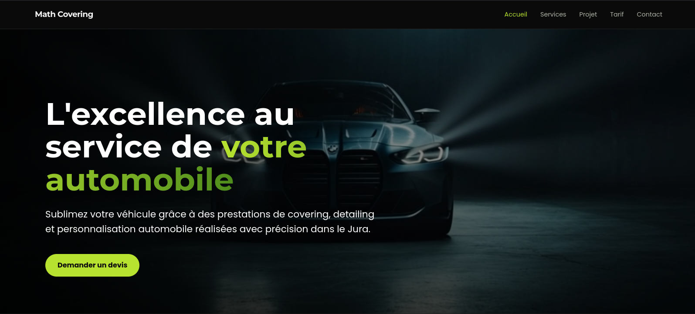
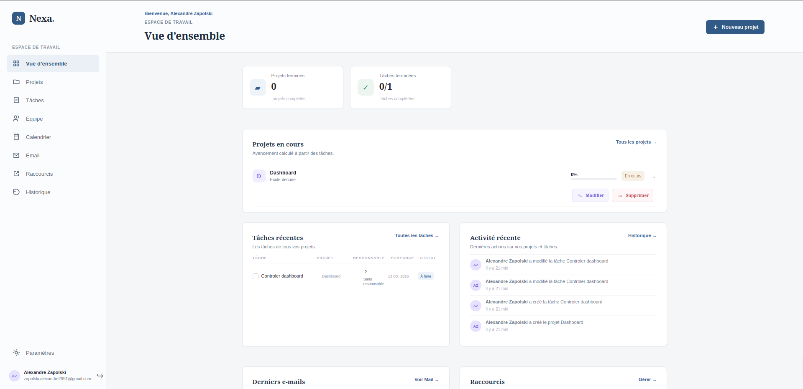
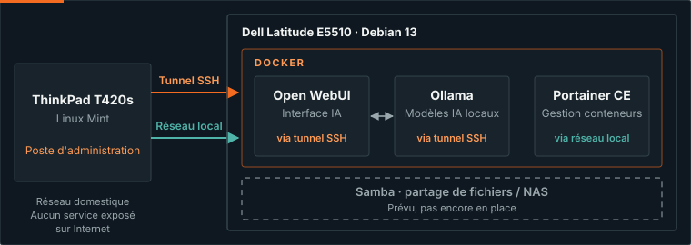
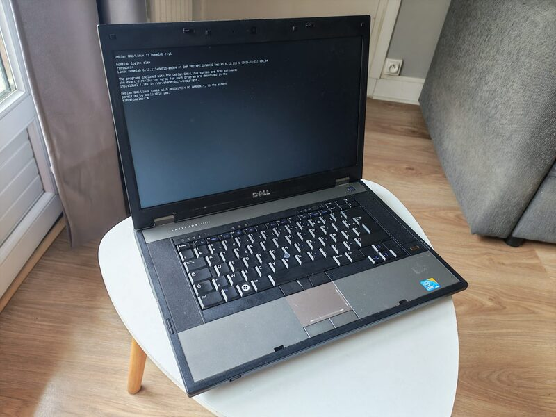

À propos
Actuellement en Bachelor Développement Web, je suis passionné par la
création de sites web et d'applications interactives.
À travers ce portfolio, je vous présente mon parcours, mes compétences
et les projets que je réalise pour progresser.
Qui suis-je ?
Je m'appelle Alexandre Zapolski. Diplômé d'un BTS en Négociation et Digitalisation de la Relation Client, j'ai d'abord travaillé dans l'automobile comme conseiller de vente. Aujourd'hui, je me reconvertis dans le développement web, un domaine qui associe créativité, logique et apprentissage continu.
J'aime créer, comprendre comment les choses fonctionnent et apprendre de nouvelles compétences. Mon objectif est de construire des sites modernes, clairs et adaptés aux besoins des utilisateurs.
Mon parcours
2026-2027 : Bachelor 3 Développement Web — DECODE (en cours)
- Développement front-end et back-end, algorithmique, bases de données et administration Linux.
- Découverte de Docker, Symfony et Vue.js, de la sécurité web, du développement collaboratif et de l’intelligence artificielle.
- Projets pratiques pour appliquer les connaissances acquises pendant l’année.
2025-2026 : Conseiller de vente automobile — Peugeot
- Accompagnement des clients particuliers et professionnels dans leurs projets automobiles.
- Analyse des besoins, présentation de solutions adaptées et suivi commercial.
- Développement des compétences en communication, négociation et organisation.
2023-2025 : BTS Négociation et Digitalisation de la Relation Client (NDRC)
- Techniques de vente, relation client et digitalisation des activités commerciales.
- Expérience en entreprise : prospection, analyse des besoins et suivi client.
- Découverte des outils numériques, notamment WordPress et PrestaShop.
Pourquoi le développement web ?
J’apprécie le développement web parce qu’il permet de partir d’une idée et de la transformer en une interface réellement utilisable. Chaque projet me donne l’occasion de résoudre des problèmes, d’améliorer mon raisonnement et de créer une expérience plus claire pour l’utilisateur.
Compétences
- Front-end : HTML, CSS, JavaScript
- Back-end : PHP, MySQL
- Outils : Git, GitHub, VS Code
Objectifs
Je souhaite consolider mes compétences en HTML, CSS, JavaScript, PHP et Python, tout en développant ma capacité à concevoir des projets web complets. Je recherche une opportunité de stage, d’alternance ou un premier poste qui me permettra de progresser au sein d’une équipe et de mettre mes connaissances en pratique.
Projets
-

Math Covering
Un site vitrine de démonstration pour une activité de covering et de detailing automobile, créé avec HTML, CSS et JavaScript.
HTML - CSS - JavaScript
-

À table
Une application de recettes permettant de trouver une idée de repas grâce à une roulette, de filtrer les recettes et de gérer ses recettes personnelles.
HTML - CSS - JavaScript
-

Nexa
Une application web de gestion de projets permettant d'organiser les tâches, de suivre leur avancement et de gérer les membres d'une équipe avec un système de rôles et de permissions.
React - Node.js - Express - PostgreSQL - Docker
Homelab
Mon homelab est un serveur personnel basé sur un ancien Dell Latitude E5510 sous Debian GNU/Linux 13. Je l'ai mis en place pour expérimenter l'administration système Linux, l'auto-hébergement de services, la conteneurisation et l'intelligence artificielle locale.

-

Matériel
Dell Latitude E5510 équipé d'un processeur Intel Core i5 M 560, de 4 Go de RAM et d'un SSD de 250 Go.
Dell Latitude E5510, Intel Core i5 M 560, 4 Go RAM, SSD 250 Go
-
Système et services
Le serveur fonctionne sous Debian GNU/Linux 13 (Trixie). Docker et Docker Compose permettent de déployer et de gérer Open WebUI pour l'interface utilisateur de l'IA locale, Ollama pour l'exécution des modèles d'IA locaux et Portainer CE pour l'administration des conteneurs. Samba est également utilisé pour le partage de fichiers sur le réseau local.
Debian 13, Linux, Docker, Docker Compose, Open WebUI, Ollama, Portainer CE, Samba
-
Ce que j'y apprends
Ce projet me permet de pratiquer l'administration Linux, le déploiement et la gestion de conteneurs, l'administration à distance par SSH, la configuration du réseau et du pare-feu, l'hébergement de services, le déploiement d'une IA locale ainsi que le diagnostic des problèmes et la documentation technique.
Administration système, Linux, SSH, Docker, Réseau, Sécurité, IA locale, Dépannage, Documentation technique
Contact
Vous pouvez me contacter pour échanger autour d'un projet, d'une opportunité ou de mon parcours.